| Parameter (coefficients) | Median | CI-lower | CI-upper | Bayesian 95% Credible |
|---|---|---|---|---|
| Model Intercepts | ||||
| Intercept (Female-Angry-White-Female P.) | 4.696 | 4.472 | 4.928 | credible |
| k Intercept (Female-Angry-White-Female P.) | 1.961 | 1.635 | 2.301 | credible |
| sigma_Intercept (Female-Angry-White-Female P.) | 2.138 | 2.066 | 2.217 | credible |
| delta_Intercept (Female-Angry-White-Female P.) | -2.273 | -2.361 | -2.195 | credible |
| v (correct drift) | ||||
| Target Emotion (happy) | 0.710 | 0.590 | 0.837 | credible |
| Target Race (Black) | 0.264 | 0.165 | 0.364 | credible |
| Target Gender (male) | 0.116 | 0.013 | 0.218 | credible |
| Person Sex (Male) | 0.291 | -0.021 | 0.584 | not credible |
| Target Emotion (happy) X Target Race (Black) | -0.500 | -0.630 | -0.361 | credible |
| Target Emotion (happy) X Target Gender (male) | -0.527 | -0.661 | -0.394 | credible |
| Target Race (Black) X Target Gender (male) | 0.008 | -0.120 | 0.135 | not credible |
| Target Emotion (happy) X Person Sex (Male) | -0.129 | -0.297 | 0.038 | not credible |
| Target Gender (male) X Person Sex (Male) | -0.127 | -0.263 | 0.012 | not credible |
| Target Race (Black) X Person Sex (Male) | -0.011 | -0.139 | 0.122 | not credible |
| Target Emotion (happy) X Target Race (Black) X Target Gender (male) | 0.319 | 0.162 | 0.473 | credible |
| Target Emotion (happy) X Target Gender (male) X Person Sex (Male) | 0.324 | 0.162 | 0.481 | credible |
| Target Emotion (happy) X Target Race (Black) X Person Sex (Male) | -0.018 | -0.175 | 0.133 | not credible |
| Target Race (Black) X Target Gender (male) X Person Sex (Male) | 0.073 | -0.088 | 0.223 | not credible |
| kappa (incorrect drift) | ||||
| k Target Emotion (happy) | -0.384 | -0.666 | -0.102 | credible |
| k Target Race (Black) | -0.446 | -0.729 | -0.189 | credible |
| k Target Gender (male) | -0.179 | -0.428 | 0.057 | not credible |
| k Person Sex (Male) | -0.011 | -0.452 | 0.428 | not credible |
| k Target Emotion (happy) X Target Race (Black) | 0.358 | -0.018 | 0.727 | not credible |
| k Target Emotion (happy) X Target Gender (male) | 0.400 | 0.067 | 0.725 | credible |
| k Target Race (Black) X Target Gender (male) | 0.084 | -0.239 | 0.417 | not credible |
| k Target Emotion (happy) X Person Sex (Male) | 0.208 | -0.168 | 0.573 | not credible |
| k Target Gender (male) X Person Sex (Male) | 0.322 | 0.001 | 0.640 | credible |
| k Target Race (Black) X Person Sex (Male) | 0.246 | -0.109 | 0.615 | not credible |
| k Target Emotion (happy) X Target Race (Black) X Target Gender (male) | 0.282 | -0.111 | 0.680 | not credible |
| k Target Emotion (happy) X Target Gender (male) X Person Sex (Male) | -0.735 | -1.125 | -0.308 | credible |
| k Target Emotion (happy) X Target Race (Black) X Person Sex (Male) | -0.089 | -0.505 | 0.325 | not credible |
| k Target Race (Black) X Target Gender (male) X Person Sex (Male) | -0.212 | -0.600 | 0.195 | not credible |
Supplementary Materials: Model Validation and Posterior Predictive Checks
Overview
This supplement provides comprehensive model validation and posterior predictive checks for all primary analyses reported in the main text. Validation is reported separately for:
- Racing Diffusion Models (RDM) - Fitted using
brms(Bürkner, 2017) withcmdstanrbackend - Ex-Gaussian Models - Fitted using
gamlss(Rigby & Stasinopoulos, 2005)
All checks are reported for each of the three experiments (Expt 1, Expt 2, Expt 3).
Racing Diffusion Models
The racing diffusion model (RDM) decomposes decision-making into four latent parameters: correct drift rate (μ), incorrect drift rate (κ), boundary separation (σ), and non-decision time (δ). Model convergence and fit were assessed using multiple diagnostics.
Experiment 1
Fixed Effect Coefficients
Trace Plots
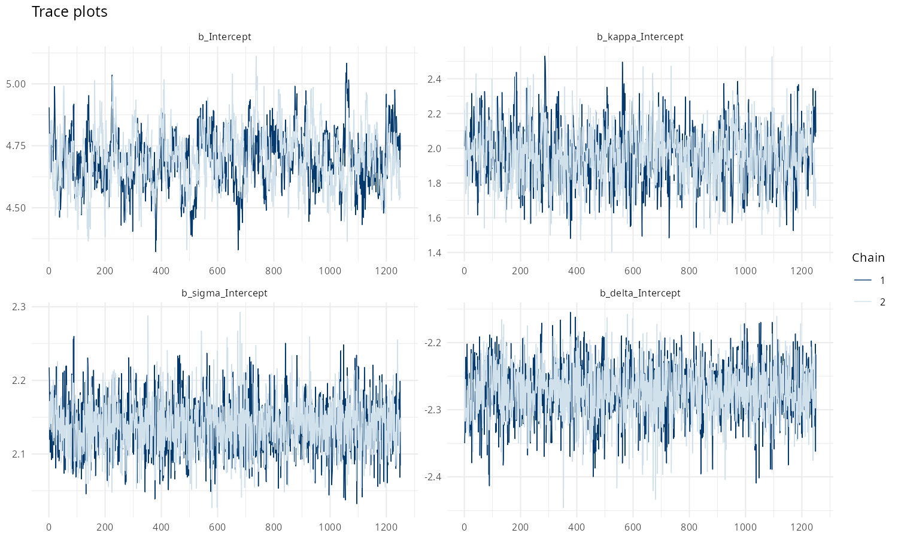
The trace plots show MCMC chains for each population-level parameter. Good mixing—indicated by overlapping chains without systematic trends—demonstrates successful convergence of the sampling algorithm.
Posterior Densities
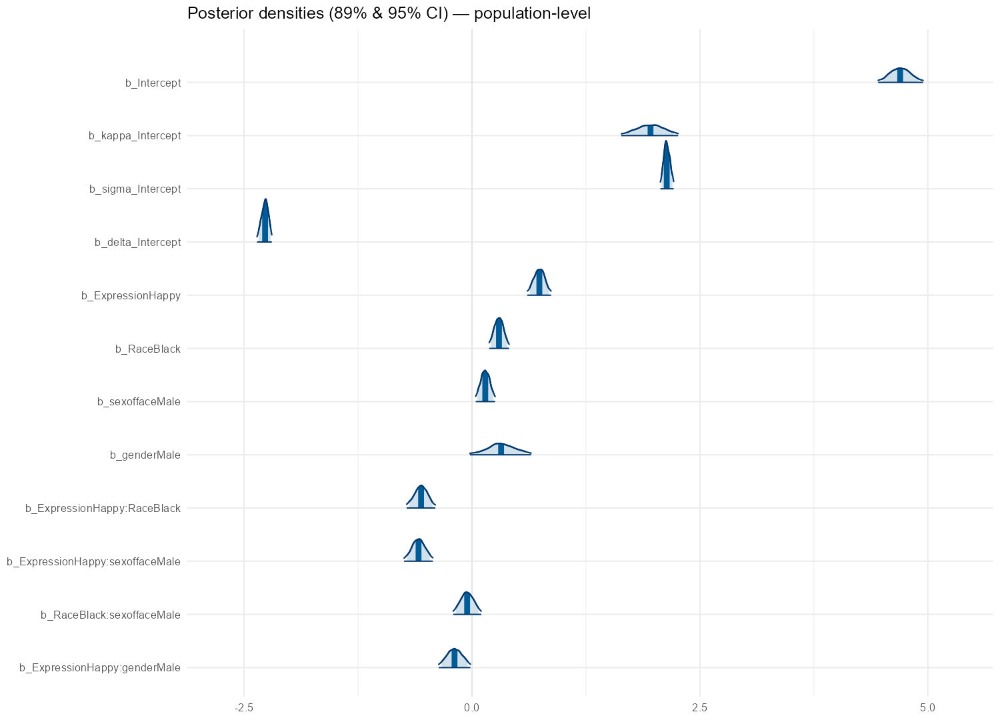
Posterior densities are smooth and unimodal, with no evidence of multimodality or boundary effects. Inner (89%) and outer (95%) credible intervals provide uncertainty quantification.
Overall RT Distribution
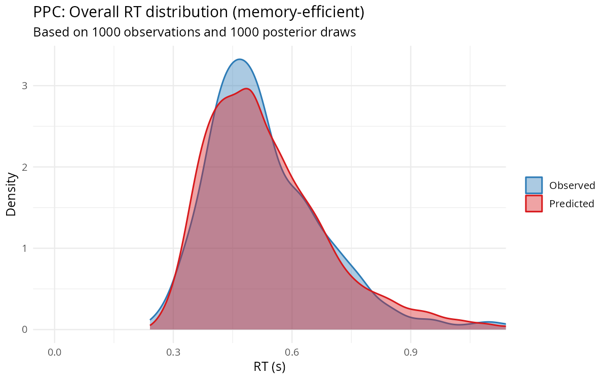
The overall response time distribution from the model (red) closely matches the observed data (blue), indicating the RDM captures the central tendency and spread of response times.
RT Distribution by Choice Accuracy
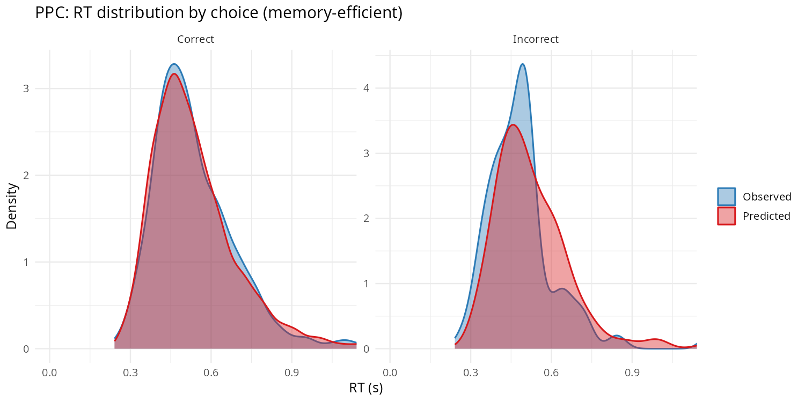
Separating by response accuracy (correct vs. incorrect) reveals the model’s ability to capture the faster RTs associated with correct responses. Predicted distributions align well with observed data.
RT Distribution by Expression
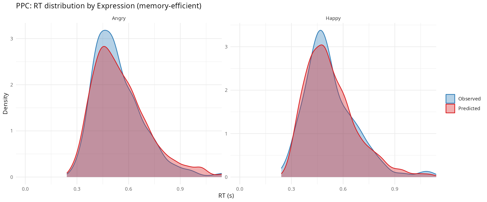
The model captures expression-based differences in processing efficiency, with predicted distributions for fearful and happy faces closely mirroring observed data.
Summary Statistics
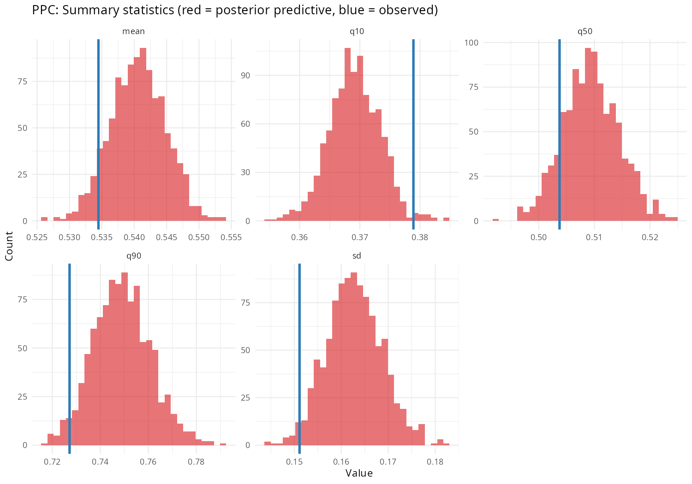
Observed summary statistics (mean, SD, 10th, 50th, and 90th percentiles) fall within the posterior predictive distributions, indicating good model fit across distributional properties.
Accuracy PPC
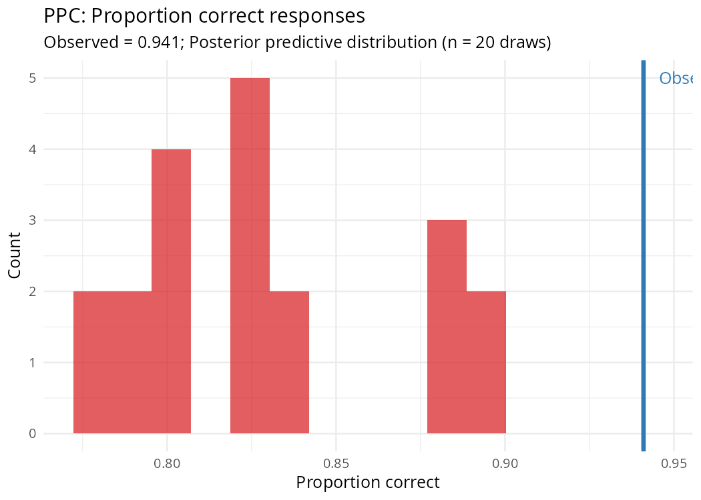
The model accurately captures the observed accuracy, with the posterior predictive distribution centered near the observed value.
Random Effect SDs
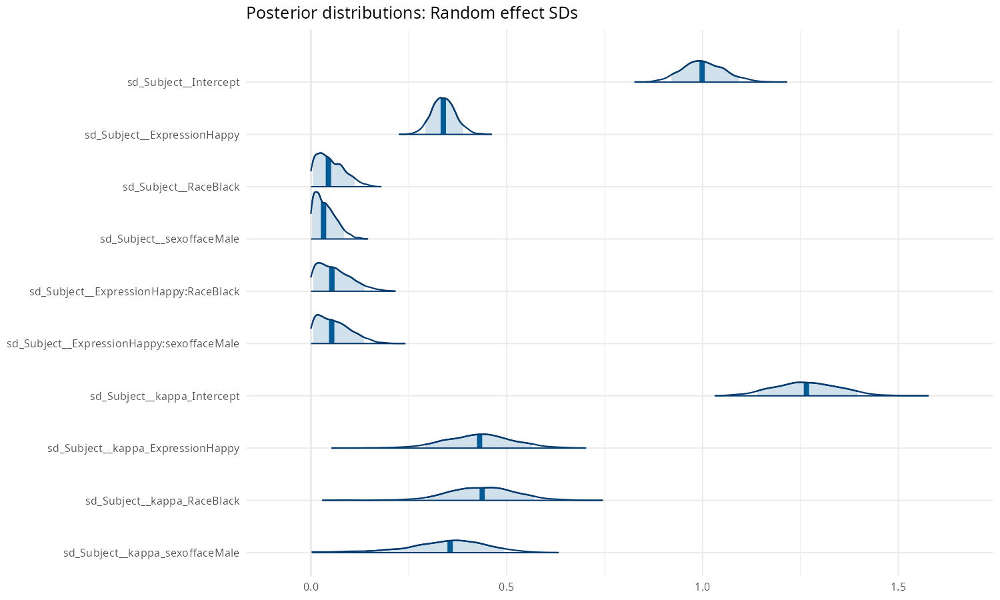
Non-zero standard deviations with credible intervals away from zero indicate meaningful individual differences in model parameters.
Experiment 2
Fixed effect Coefficients
| Parameter (coefficients) | Median | CI-lower | CI-upper | Bayesian 95% Credible |
|---|---|---|---|---|
| Model Intercepts | ||||
| Intercept = Female, Angry, White face | 5.128 | 4.892 | 5.354 | credible |
| k Intercept = Female, Angry, White face | 2.380 | 2.066 | 2.698 | credible |
| sigma_Intercept = Female, Angry, White face | 2.315 | 2.274 | 2.357 | credible |
| delta_Intercept = Female, Angry, White face | -2.150 | -2.188 | -2.109 | credible |
| v (correct drift) | ||||
| Person Sex (male) | -0.262 | -0.586 | 0.071 | not credible |
| Target Gender (male) | 0.221 | 0.132 | 0.309 | credible |
| Target Emotion (happy) | 0.707 | 0.605 | 0.819 | credible |
| Target Race (black) | 0.325 | 0.240 | 0.411 | credible |
| Person Race (black) | -0.117 | -0.419 | 0.209 | not credible |
| Person Sex (male) X Target Gender (male) | -0.247 | -0.363 | -0.123 | credible |
| Person Sex (male) X Target Emotion (happy) | -0.099 | -0.255 | 0.053 | not credible |
| Target Gender (male) X Target Emotion (happy) | -0.601 | -0.730 | -0.470 | credible |
| Person Sex (male) X Target Race (black) | -0.041 | -0.157 | 0.074 | not credible |
| Target Gender (male) X Target Race (black) | -0.095 | -0.207 | 0.018 | not credible |
| Target Emotion (happy) X Target Race (black) | -0.446 | -0.568 | -0.318 | credible |
| Person Sex (male) X Person Race (black) | 0.090 | -0.384 | 0.561 | not credible |
| Target Gender (male) X Person Race (black) | -0.166 | -0.286 | -0.047 | credible |
| Target Emotion (happy) X Person Race (black) | -0.126 | -0.276 | 0.026 | not credible |
| Target Race (black) X Person Race (black) | -0.234 | -0.351 | -0.119 | credible |
| Person Sex (male) X Target Gender (male) X Target Emotion (happy) | 0.378 | 0.208 | 0.544 | credible |
| Person Sex (male) X Target Gender (male) X Target Race (black) | 0.127 | -0.021 | 0.268 | not credible |
| Person Sex (male) X Target Emotion (happy) X Target Race (black) | -0.133 | -0.298 | 0.030 | not credible |
| Target Gender (male) X Target Emotion (happy) X Target Race (black) | 0.335 | 0.184 | 0.479 | credible |
| Person Sex (male) X Target Gender (male) X Person Race (black) | 0.201 | 0.043 | 0.355 | credible |
| Person Sex (male) X Target Emotion (happy) X Person Race (black) | 0.115 | -0.085 | 0.321 | not credible |
| Target Gender (male) X Target Emotion (happy) X Person Race (black) | 0.181 | 0.012 | 0.345 | credible |
| Person Sex (male) X Target Race (black) X Person Race (black) | 0.141 | -0.003 | 0.293 | not credible |
| Target Gender (male) X Target Race (black) X Person Race (black) | 0.201 | 0.055 | 0.346 | credible |
| Target Emotion (happy) X Target Race (black) X Person Race (black) | 0.304 | 0.148 | 0.466 | credible |
| Person Sex (male) X Target Gender (male) X Target Emotion (happy) X Target Race (black) | 0.094 | -0.071 | 0.267 | not credible |
| Person Sex (male) X Target Gender (male) X Target Emotion (happy) X Person Race (black) | -0.131 | -0.319 | 0.073 | not credible |
| Person Sex (male) X Target Gender (male) X Target Race (black) X Person Race (black) | -0.242 | -0.413 | -0.071 | credible |
| Person Sex (male) X Target Emotion (happy) X Target Race (black) X Person Race (black) | 0.054 | -0.144 | 0.252 | not credible |
| Target Gender (male) X Target Emotion (happy) X Target Race (black) X Person Race (black) | -0.184 | -0.355 | -0.015 | credible |
| kappa (incorrect drift) | ||||
| k Person Sex (male) | -0.318 | -0.756 | 0.150 | not credible |
| k Target Gender (male) | -0.073 | -0.293 | 0.147 | not credible |
| k Target Emotion (happy) | -0.298 | -0.551 | -0.051 | credible |
| k Target Race (black) | -0.178 | -0.402 | 0.060 | not credible |
| k Person Race (black) | -0.169 | -0.608 | 0.269 | not credible |
| k Person Sex (male) X Target Gender (male) | 0.051 | -0.265 | 0.348 | not credible |
| k Person Sex (male) X Target Emotion (happy) | 0.014 | -0.341 | 0.357 | not credible |
| k Target Gender (male) X Target Emotion (happy) | 0.033 | -0.293 | 0.351 | not credible |
| k Person Sex (male) X Target Race (black) | -0.316 | -0.626 | -0.003 | credible |
| k Target Gender (male) X Target Race (black) | -0.186 | -0.465 | 0.102 | not credible |
| k Target Emotion (happy) X Target Race (black) | 0.273 | -0.056 | 0.576 | not credible |
| k Person Sex (male) X Person Race (black) | 0.231 | -0.409 | 0.863 | not credible |
| k Target Gender (male) X Person Race (black) | -0.115 | -0.421 | 0.196 | not credible |
| k Target Emotion (happy) X Person Race (black) | 0.074 | -0.283 | 0.411 | not credible |
| k Target Race (black) X Person Race (black) | 0.180 | -0.123 | 0.471 | not credible |
| k Person Sex (male) X Target Gender (male) X Target Emotion (happy) | -0.407 | -0.824 | 0.023 | not credible |
| k Person Sex (male) X Target Gender (male) X Target Race (black) | 0.241 | -0.118 | 0.612 | not credible |
| k Person Sex (male) X Target Emotion (happy) X Target Race (black) | 0.387 | -0.008 | 0.806 | not credible |
| k Target Gender (male) X Target Emotion (happy) X Target Race (black) | 0.530 | 0.162 | 0.900 | credible |
| k Person Sex (male) X Target Gender (male) X Person Race (black) | 0.184 | -0.246 | 0.613 | not credible |
| k Person Sex (male) X Target Emotion (happy) X Person Race (black) | -0.187 | -0.646 | 0.285 | not credible |
| k Target Gender (male) X Target Emotion (happy) X Person Race (black) | 0.445 | 0.034 | 0.860 | credible |
| k Person Sex (male) X Target Race (black) X Person Race (black) | -0.009 | -0.414 | 0.414 | not credible |
| k Target Gender (male) X Target Race (black) X Person Race (black) | -0.011 | -0.362 | 0.351 | not credible |
| k Target Emotion (happy) X Target Race (black) X Person Race (black) | -0.419 | -0.818 | -0.023 | credible |
| k Person Sex (male) X Target Gender (male) X Target Emotion (happy) X Target Race (black) | -0.285 | -0.711 | 0.123 | not credible |
| k Person Sex (male) X Target Gender (male) X Target Emotion (happy) X Person Race (black) | -0.033 | -0.558 | 0.519 | not credible |
| k Person Sex (male) X Target Gender (male) X Target Race (black) X Person Race (black) | -0.011 | -0.436 | 0.419 | not credible |
| k Person Sex (male) X Target Emotion (happy) X Target Race (black) X Person Race (black) | 0.284 | -0.219 | 0.770 | not credible |
| k Target Gender (male) X Target Emotion (happy) X Target Race (black) X Person Race (black) | -0.377 | -0.799 | 0.046 | not credible |
Trace Plots
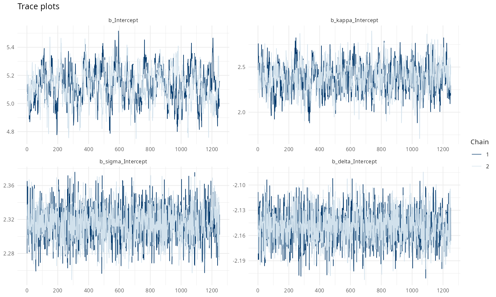
Trace plots for Experiment 2 similarly demonstrate good mixing across chains, indicating successful convergence.
Overall RT Distribution
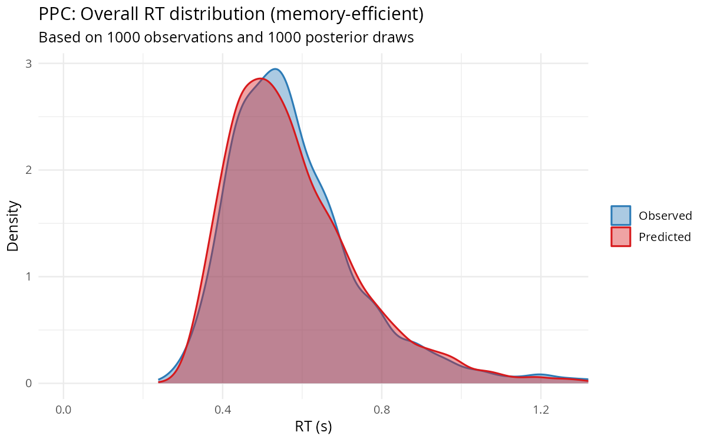
The model captures the overall RT distribution well, with predicted and observed densities showing close alignment.
RT Distribution by Choice Accuracy
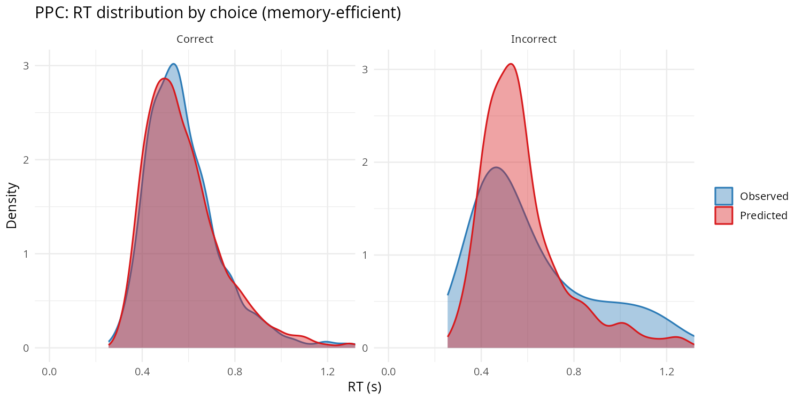
The model reproduces the RT difference between correct and incorrect responses.
RT Distribution by Expression
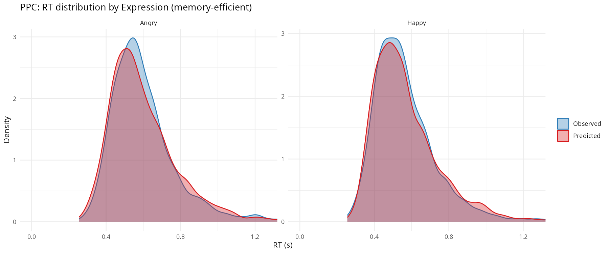
Expression-based differences in RT are well captured by the model.
Summary Statistics
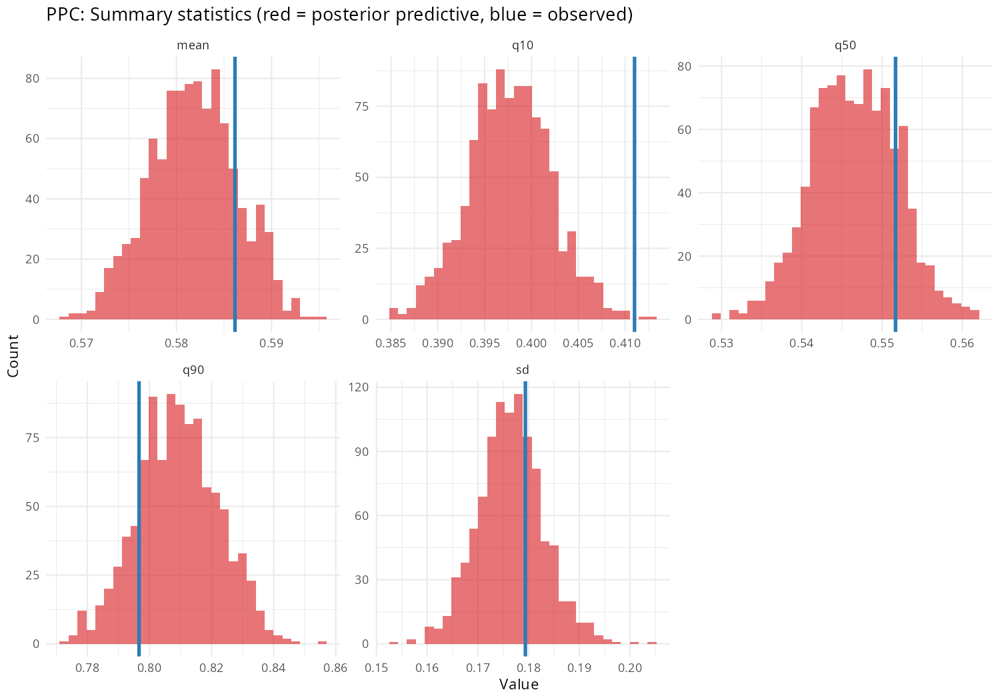
All observed summary statistics fall within predicted ranges.
Accuracy PPC
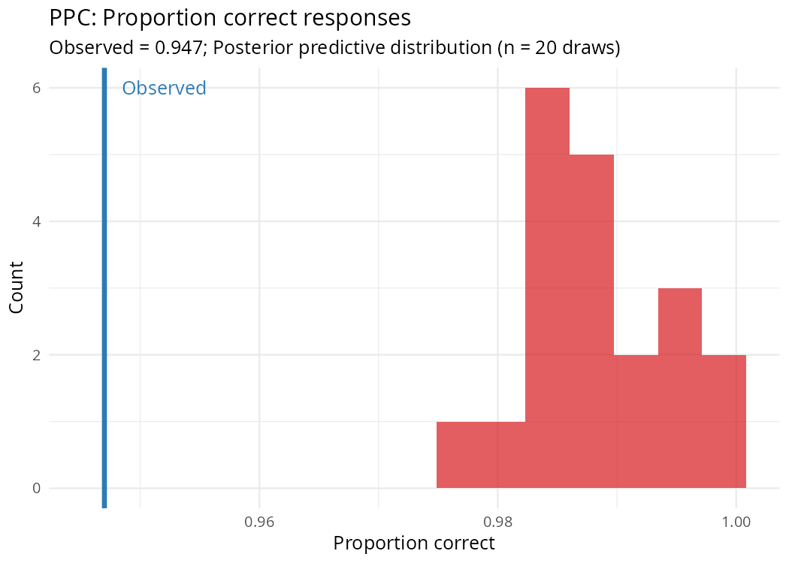
The model accurately captures the high accuracy observed in Experiment 2.
Random Effect SDs
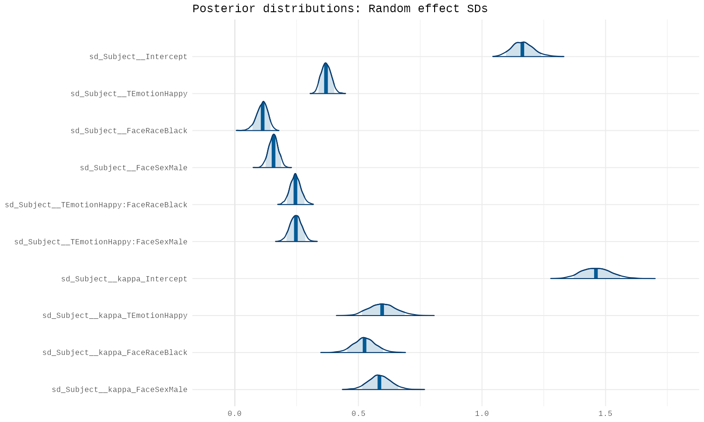
Meaningful individual differences are evident across parameters.
Experiment 3
Fixed Effect Coefficients
| Parameter (coefficients) | Median | CI-lower | CI-upper | Bayesian 95% Credible |
|---|---|---|---|---|
| Model Intercepts | ||||
| Intercept = Female, Angry, White face | 5.500 | 5.258 | 5.750 | credible |
| k Intercept = Female, Angry, White face | 2.012 | 1.656 | 2.370 | credible |
| sigma_Intercept = Female, Angry, White face | 2.440 | 2.384 | 2.503 | credible |
| delta_Intercept = Female, Angry, White face | -2.331 | -2.409 | -2.268 | credible |
| v (correct drift) | ||||
| Person Sex (male) | -0.199 | -0.558 | 0.155 | not credible |
| Target Gender (male) | -0.098 | -0.229 | 0.040 | not credible |
| Target Emotion (happy) | 0.313 | 0.200 | 0.428 | credible |
| Target Race (black) | -0.020 | -0.148 | 0.107 | not credible |
| Person Race (black) | -0.397 | -0.727 | -0.079 | credible |
| Person Sex (male) X Target Gender (male) | -0.011 | -0.183 | 0.158 | not credible |
| Person Sex (male) X Target Emotion (happy) | 0.045 | -0.105 | 0.194 | not credible |
| Target Gender (male) X Target Emotion (happy) | -0.192 | -0.303 | -0.083 | credible |
| Person Sex (male) X Target Race (black) | 0.011 | -0.163 | 0.192 | not credible |
| Target Gender (male) X Target Race (black) | -0.009 | -0.114 | 0.092 | not credible |
| Person Sex (male) X Person Race (black) | -0.029 | -0.508 | 0.449 | not credible |
| Target Gender (male) X Person Race (black) | -0.065 | -0.231 | 0.106 | not credible |
| Target Emotion (happy) X Target Race (black) | 0.019 | -0.090 | 0.125 | not credible |
| Target Emotion (happy) X Person Race (black) | 0.036 | -0.115 | 0.184 | not credible |
| Target Race (black) X Person Race (black) | -0.114 | -0.289 | 0.058 | not credible |
| Person Sex (male) X Target Gender (male) X Target Emotion (happy) | -0.024 | -0.136 | 0.084 | not credible |
| Person Sex (male) X Target Gender (male) X Target Race (black) | 0.051 | -0.050 | 0.150 | not credible |
| Person Sex (male) X Target Gender (male) X Person Race (black) | 0.003 | -0.204 | 0.221 | not credible |
| Person Sex (male) X Target Emotion (happy) X Target Race (black) | -0.103 | -0.208 | 0.006 | not credible |
| Person Sex (male) X Target Emotion (happy) X Person Race (black) | 0.057 | -0.119 | 0.245 | not credible |
| Person Sex (male) X Target Race (black) X Person Race (black) | 0.029 | -0.193 | 0.250 | not credible |
| Target Gender (male) X Target Emotion (happy) X Target Race (black) | 0.350 | 0.249 | 0.454 | credible |
| Target Gender (male) X Target Emotion (happy) X Person Race (black) | -0.066 | -0.183 | 0.045 | not credible |
| Target Gender (male) X Target Race (black) X Person Race (black) | 0.286 | 0.183 | 0.392 | credible |
| Target Emotion (happy) X Target Race (black) X Person Race (black) | -0.026 | -0.139 | 0.086 | not credible |
| kappa (incorrect drift) | ||||
| k Person Sex (male) | 0.124 | -0.344 | 0.605 | not credible |
| k Target Gender (male) | -0.015 | -0.291 | 0.271 | not credible |
| k Target Emotion (happy) | -0.006 | -0.260 | 0.242 | not credible |
| k Target Race (black) | -0.096 | -0.385 | 0.192 | not credible |
| k Person Race (black) | -0.244 | -0.738 | 0.236 | not credible |
| k Person Sex (male) X Target Gender (male) | -0.019 | -0.364 | 0.317 | not credible |
| k Person Sex (male) X Target Emotion (happy) | -0.015 | -0.323 | 0.301 | not credible |
| k Target Gender (male) X Target Emotion (happy) | 0.449 | 0.166 | 0.731 | credible |
| k Person Sex (male) X Target Race (black) | 0.090 | -0.263 | 0.447 | not credible |
| k Target Gender (male) X Target Race (black) | -0.195 | -0.468 | 0.083 | not credible |
| k Person Sex (male) X Person Race (black) | 0.007 | -0.635 | 0.665 | not credible |
| k Target Gender (male) X Person Race (black) | -0.020 | -0.381 | 0.321 | not credible |
| k Target Emotion (happy) X Target Race (black) | -0.044 | -0.330 | 0.239 | not credible |
| k Target Emotion (happy) X Person Race (black) | 0.079 | -0.223 | 0.395 | not credible |
| k Target Race (black) X Person Race (black) | 0.096 | -0.266 | 0.470 | not credible |
| k Person Sex (male) X Target Gender (male) X Target Emotion (happy) | -0.305 | -0.579 | -0.025 | credible |
| k Person Sex (male) X Target Gender (male) X Target Race (black) | -0.025 | -0.302 | 0.227 | not credible |
| k Person Sex (male) X Target Gender (male) X Person Race (black) | -0.019 | -0.445 | 0.407 | not credible |
| k Person Sex (male) X Target Emotion (happy) X Target Race (black) | 0.113 | -0.166 | 0.395 | not credible |
| k Person Sex (male) X Target Emotion (happy) X Person Race (black) | -0.003 | -0.363 | 0.359 | not credible |
| k Person Sex (male) X Target Race (black) X Person Race (black) | -0.094 | -0.548 | 0.341 | not credible |
| k Target Gender (male) X Target Emotion (happy) X Target Race (black) | -0.051 | -0.313 | 0.213 | not credible |
| k Target Gender (male) X Target Emotion (happy) X Person Race (black) | -0.335 | -0.626 | -0.046 | credible |
| k Target Gender (male) X Target Race (black) X Person Race (black) | 0.434 | 0.170 | 0.691 | credible |
| k Target Emotion (happy) X Target Race (black) X Person Race (black) | -0.092 | -0.375 | 0.195 | not credible |
Trace Plots
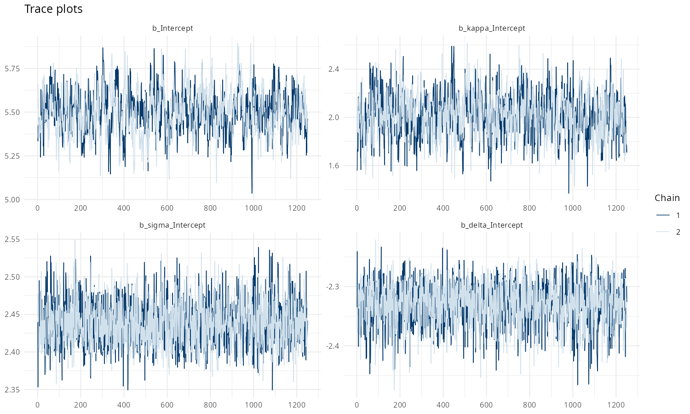
Trace plots for Experiment 3 show good mixing, confirming convergence.
Overall RT Distribution
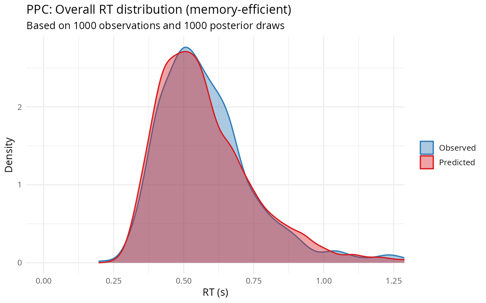
The model captures the RT distribution effectively.
RT Distribution by Choice Accuracy
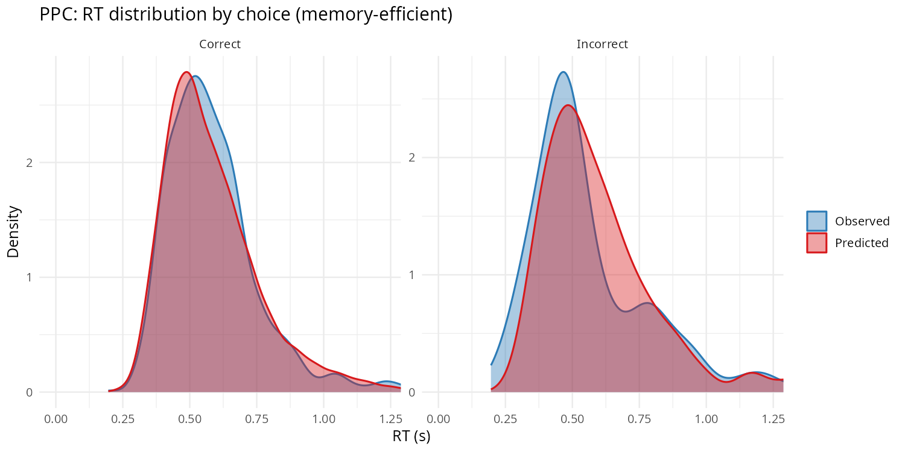
The RT difference between correct and incorrect responses is well reproduced.
RT Distribution by Expression
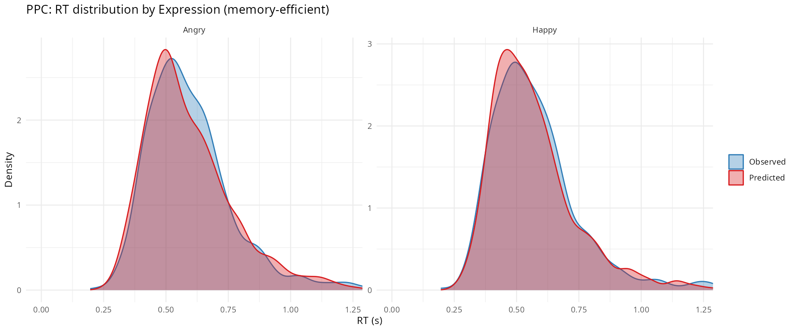
Expression effects on RT are captured accurately.
Summary Statistics
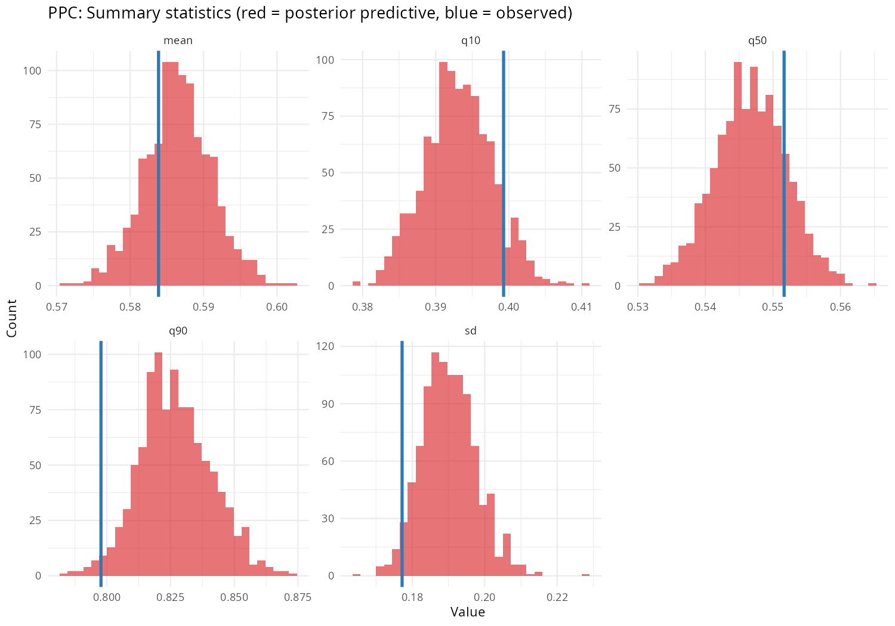
Observed statistics fall within predictive distributions.
Accuracy PPC
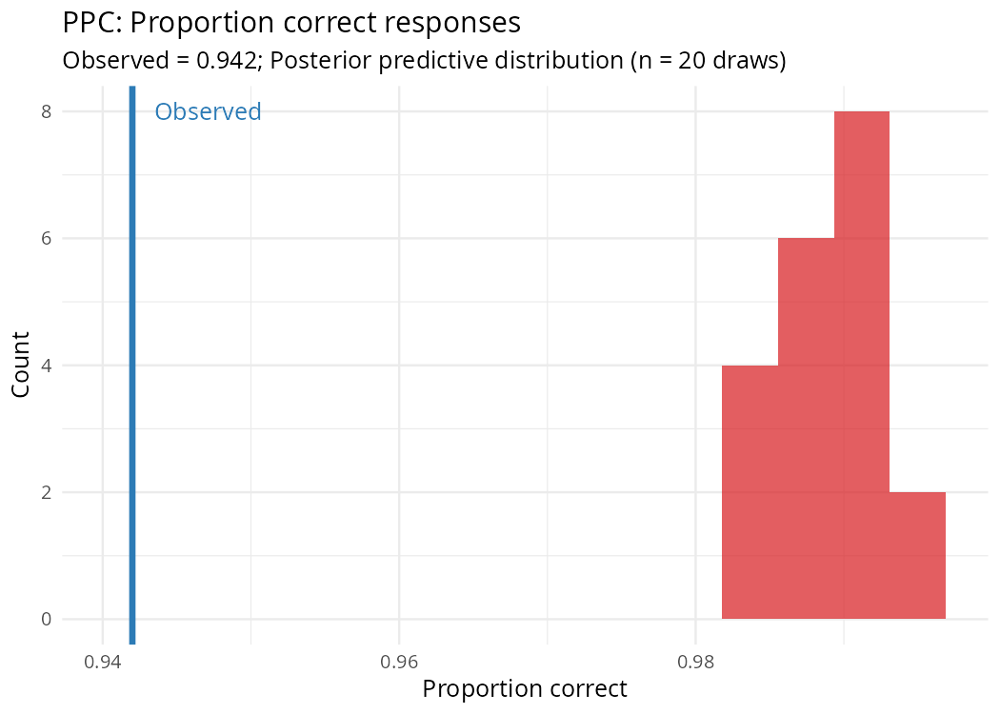
Model predictions align with observed accuracy.
Random Effect SDs
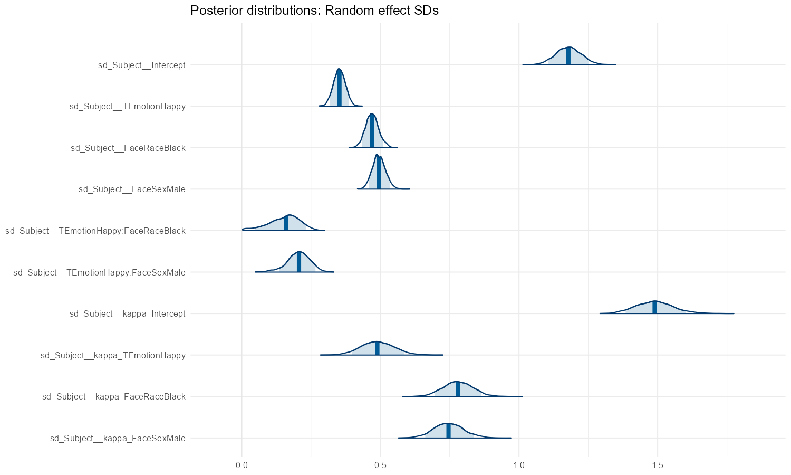
Individual differences are present across all parameters.
Ex-Gaussian Models
Ex-Gaussian models were fitted using gamlss to decompose response time distributions into three parameters: mu (μ; mean of the normal component), sigma (σ; standard deviation of the normal component), and nu (ν; exponential tail parameter). Model validation was assessed using quantile-based diagnostics.
Experiment 1
Fixed effect Coefficients
| Parameter | Term | Estimate | CI-lower | CI-upper | p.value |
|---|---|---|---|---|---|
| mu (seconds) | |||||
| mu | (Intercept = Female, Angry, White face) | 0.433 | 0.428 | 0.437 | <.001 |
| mu | Person Sex (male) | -0.009 | -0.015 | -0.002 | .008 |
| mu | Target Gender (male) | -0.006 | -0.013 | 0.001 | .086 |
| mu | Target Emotion (happy) | -0.037 | -0.043 | -0.030 | <.001 |
| mu | Target Race (black) | 0.001 | -0.005 | 0.008 | .656 |
| mu | Person Sex (male) X Target Gender (male) | 0.007 | -0.002 | 0.017 | .115 |
| mu | Person Sex (male) X Target Emotion (happy) | 0.020 | 0.011 | 0.028 | <.001 |
| mu | Target Gender (male) X Target Emotion (happy) | 0.017 | 0.008 | 0.026 | <.001 |
| mu | Person Sex (male) X Target Race (black) | -0.009 | -0.018 | 0.000 | .049 |
| mu | Target Gender (male) X Target Race (black) | -0.010 | -0.019 | -0.001 | .028 |
| mu | Target Emotion (happy) X Target Race (black) | 0.017 | 0.007 | 0.026 | <.001 |
| mu | Person Sex (male) X Target Gender (male) X Target Emotion (happy) | -0.030 | -0.042 | -0.018 | <.001 |
| mu | Person Sex (male) X Target Gender (male) X Target Race (black) | 0.016 | 0.004 | 0.028 | .009 |
| mu | Person Sex (male) X Target Emotion (happy) X Target Race (black) | -0.006 | -0.018 | 0.006 | .325 |
| mu | Target Gender (male) X Target Emotion (happy) X Target Race (black) | 0.004 | -0.008 | 0.017 | .518 |
| mu | Person Sex (male) X Target Gender (male) X Target Emotion (happy) X Target Race (black) | 0.002 | -0.015 | 0.019 | .842 |
| sigma (log units) | |||||
| sigma | (Intercept = Female, Angry, White face) | -2.681 | -2.773 | -2.589 | <.001 |
| sigma | Person Sex (male) | -0.094 | -0.218 | 0.029 | .135 |
| sigma | Target Gender (male) | 0.010 | -0.120 | 0.140 | .881 |
| sigma | Target Emotion (happy) | -0.037 | -0.168 | 0.094 | .579 |
| sigma | Target Race (black) | 0.000 | -0.127 | 0.126 | .994 |
| sigma | Person Sex (male) X Target Gender (male) | -0.028 | -0.206 | 0.150 | .759 |
| sigma | Person Sex (male) X Target Emotion (happy) | 0.040 | -0.131 | 0.211 | .646 |
| sigma | Target Gender (male) X Target Emotion (happy) | -0.090 | -0.278 | 0.097 | .344 |
| sigma | Person Sex (male) X Target Race (black) | -0.146 | -0.321 | 0.029 | .102 |
| sigma | Target Gender (male) X Target Race (black) | -0.153 | -0.335 | 0.028 | .098 |
| sigma | Target Emotion (happy) X Target Race (black) | 0.095 | -0.084 | 0.274 | .297 |
| sigma | Person Sex (male) X Target Gender (male) X Target Emotion (happy) | -0.114 | -0.369 | 0.141 | .381 |
| sigma | Person Sex (male) X Target Gender (male) X Target Race (black) | 0.266 | 0.018 | 0.515 | .036 |
| sigma | Person Sex (male) X Target Emotion (happy) X Target Race (black) | 0.083 | -0.160 | 0.325 | .504 |
| sigma | Target Gender (male) X Target Emotion (happy) X Target Race (black) | 0.198 | -0.059 | 0.455 | .131 |
| sigma | Person Sex (male) X Target Gender (male) X Target Emotion (happy) X Target Race (black) | -0.127 | -0.478 | 0.224 | .477 |
| tau (log units) | |||||
| nu | (Intercept = Female, Angry, White face) | -1.916 | -1.972 | -1.859 | <.001 |
| nu | Person Sex (male) | -0.143 | -0.223 | -0.063 | <.001 |
| nu | Target Gender (male) | -0.054 | -0.135 | 0.028 | .195 |
| nu | Target Emotion (happy) | -0.190 | -0.271 | -0.109 | <.001 |
| nu | Target Race (black) | -0.220 | -0.301 | -0.138 | <.001 |
| nu | Person Sex (male) X Target Gender (male) | 0.052 | -0.063 | 0.167 | .375 |
| nu | Person Sex (male) X Target Emotion (happy) | -0.068 | -0.182 | 0.046 | .241 |
| nu | Target Gender (male) X Target Emotion (happy) | 0.236 | 0.121 | 0.351 | <.001 |
| nu | Person Sex (male) X Target Race (black) | 0.111 | -0.003 | 0.225 | .057 |
| nu | Target Gender (male) X Target Race (black) | 0.096 | -0.019 | 0.211 | .103 |
| nu | Target Emotion (happy) X Target Race (black) | 0.224 | 0.108 | 0.340 | <.001 |
| nu | Person Sex (male) X Target Gender (male) X Target Emotion (happy) | 0.025 | -0.137 | 0.187 | .766 |
| nu | Person Sex (male) X Target Gender (male) X Target Race (black) | -0.262 | -0.425 | -0.100 | .002 |
| nu | Person Sex (male) X Target Emotion (happy) X Target Race (black) | 0.028 | -0.135 | 0.191 | .735 |
| nu | Target Gender (male) X Target Emotion (happy) X Target Race (black) | -0.323 | -0.488 | -0.159 | <.001 |
| nu | Person Sex (male) X Target Gender (male) X Target Emotion (happy) X Target Race (black) | 0.083 | -0.148 | 0.313 | .482 |
Quantile Comparison
The quantile comparison plot shows predicted versus observed quantiles across the response time distribution. Points falling near the diagonal line indicate good model fit across the entire distribution.
Q-Q Plot
The quantile-quantile plot compares theoretical versus sample quantiles. Deviation from the diagonal line would indicate lack of fit; close alignment supports the ex-Gaussian distributional assumption.
Quantile Differences
This plot shows the difference between predicted and observed quantiles. Values near zero across all quantiles indicate unbiased predictions throughout the distribution.
Percent Error
The percent error plot displays relative prediction errors. Small percent errors (typically <5%) across quantiles indicate good relative fit.
Actual vs. Predicted
This overlay plot compares the observed density with predicted densities from the model. Close alignment indicates the ex-Gaussian distribution adequately captures the shape of the RT distribution.
Density Comparison
The density comparison plot provides an alternative visualization of observed versus predicted densities, with good overlap indicating appropriate distributional fit.
Conditional Quantiles
Conditional quantile plots show model fit separately for each subgroup (e.g., by expression, face sex, participant gender). Consistent fit across subgroups indicates the model captures condition effects appropriately.
Experiment 2
Fixed effect Coefficients
| Parameter | Term | Estimate | CI-lower | CI-upper | p.value |
|---|---|---|---|---|---|
| mu (seconds) | |||||
| mu | (Intercept = Female, Angry, White face) | 0.468 | 0.465 | 0.472 | <.001 |
| mu | Person Sex (male) | 0.014 | 0.009 | 0.019 | <.001 |
| mu | Target Gender (male) | -0.015 | -0.020 | -0.010 | <.001 |
| mu | Target Emotion (happy) | -0.030 | -0.035 | -0.025 | <.001 |
| mu | Target Race (black) | -0.006 | -0.011 | -0.002 | .007 |
| mu | Person Race (black) | -0.002 | -0.007 | 0.003 | .401 |
| mu | Person Sex (male) X Target Gender (male) | 0.020 | 0.013 | 0.027 | <.001 |
| mu | Person Sex (male) X Target Emotion (happy) | 0.008 | 0.002 | 0.015 | .014 |
| mu | Target Gender (male) X Target Emotion (happy) | 0.027 | 0.020 | 0.033 | <.001 |
| mu | Person Sex (male) X Target Race (black) | 0.002 | -0.004 | 0.009 | .5 |
| mu | Target Gender (male) X Target Race (black) | -0.006 | -0.012 | 0.000 | .058 |
| mu | Target Emotion (happy) X Target Race (black) | 0.025 | 0.019 | 0.031 | <.001 |
| mu | Person Sex (male) X Person Race (black) | -0.003 | -0.010 | 0.004 | .427 |
| mu | Target Gender (male) X Person Race (black) | 0.014 | 0.007 | 0.021 | <.001 |
| mu | Target Emotion (happy) X Person Race (black) | 0.012 | 0.005 | 0.018 | .001 |
| mu | Target Race (black) X Person Race (black) | 0.010 | 0.003 | 0.017 | .004 |
| mu | Person Sex (male) X Target Gender (male) X Target Emotion (happy) | -0.026 | -0.035 | -0.017 | <.001 |
| mu | Person Sex (male) X Target Gender (male) X Target Race (black) | 0.004 | -0.005 | 0.013 | .44 |
| mu | Person Sex (male) X Target Emotion (happy) X Target Race (black) | -0.012 | -0.021 | -0.003 | .01 |
| mu | Target Gender (male) X Target Emotion (happy) X Target Race (black) | -0.010 | -0.019 | -0.001 | .029 |
| mu | Person Sex (male) X Target Gender (male) X Person Race (black) | -0.016 | -0.026 | -0.007 | .001 |
| mu | Person Sex (male) X Target Emotion (happy) X Person Race (black) | -0.014 | -0.024 | -0.005 | .003 |
| mu | Target Gender (male) X Target Emotion (happy) X Person Race (black) | -0.013 | -0.022 | -0.004 | .007 |
| mu | Person Sex (male) X Target Race (black) X Person Race (black) | -0.001 | -0.010 | 0.009 | .916 |
| mu | Target Gender (male) X Target Race (black) X Person Race (black) | 0.002 | -0.007 | 0.011 | .695 |
| mu | Target Emotion (happy) X Target Race (black) X Person Race (black) | -0.027 | -0.036 | -0.018 | <.001 |
| mu | Person Sex (male) X Target Gender (male) X Target Emotion (happy) X Target Race (black) | 0.013 | 0.000 | 0.025 | .047 |
| mu | Person Sex (male) X Target Gender (male) X Target Emotion (happy) X Person Race (black) | 0.013 | -0.001 | 0.026 | .061 |
| mu | Person Sex (male) X Target Gender (male) X Target Race (black) X Person Race (black) | -0.010 | -0.023 | 0.003 | .132 |
| mu | Person Sex (male) X Target Emotion (happy) X Target Race (black) X Person Race (black) | 0.026 | 0.013 | 0.039 | <.001 |
| mu | Target Gender (male) X Target Emotion (happy) X Target Race (black) X Person Race (black) | 0.009 | -0.004 | 0.022 | .166 |
| mu | Person Sex (male) X Target Gender (male) X Target Emotion (happy) X Target Race (black) X Person Race (black) | -0.020 | -0.038 | -0.002 | .031 |
| sigma (log units) | |||||
| sigma | (Intercept = Female, Angry, White face) | -2.537 | -2.608 | -2.466 | <.001 |
| sigma | Person Sex (male) | -0.042 | -0.143 | 0.060 | .42 |
| sigma | Target Gender (male) | -0.102 | -0.205 | 0.002 | .054 |
| sigma | Target Emotion (happy) | -0.097 | -0.193 | -0.001 | .048 |
| sigma | Target Race (black) | -0.185 | -0.284 | -0.086 | <.001 |
| sigma | Person Race (black) | 0.001 | -0.106 | 0.109 | .983 |
| sigma | Person Sex (male) X Target Gender (male) | 0.030 | -0.116 | 0.175 | .688 |
| sigma | Person Sex (male) X Target Emotion (happy) | 0.061 | -0.075 | 0.198 | .38 |
| sigma | Target Gender (male) X Target Emotion (happy) | 0.103 | -0.039 | 0.244 | .155 |
| sigma | Person Sex (male) X Target Race (black) | 0.023 | -0.118 | 0.165 | .747 |
| sigma | Target Gender (male) X Target Race (black) | 0.018 | -0.128 | 0.165 | .804 |
| sigma | Target Emotion (happy) X Target Race (black) | 0.337 | 0.204 | 0.470 | <.001 |
| sigma | Person Sex (male) X Person Race (black) | -0.110 | -0.259 | 0.039 | .147 |
| sigma | Target Gender (male) X Person Race (black) | -0.023 | -0.173 | 0.127 | .759 |
| sigma | Target Emotion (happy) X Person Race (black) | -0.008 | -0.151 | 0.136 | .915 |
| sigma | Target Race (black) X Person Race (black) | 0.155 | 0.008 | 0.303 | .039 |
| sigma | Person Sex (male) X Target Gender (male) X Target Emotion (happy) | -0.048 | -0.246 | 0.151 | .638 |
| sigma | Person Sex (male) X Target Gender (male) X Target Race (black) | 0.114 | -0.088 | 0.317 | .269 |
| sigma | Person Sex (male) X Target Emotion (happy) X Target Race (black) | -0.250 | -0.442 | -0.058 | .011 |
| sigma | Target Gender (male) X Target Emotion (happy) X Target Race (black) | 0.005 | -0.192 | 0.203 | .957 |
| sigma | Person Sex (male) X Target Gender (male) X Person Race (black) | 0.114 | -0.097 | 0.325 | .289 |
| sigma | Person Sex (male) X Target Emotion (happy) X Person Race (black) | 0.145 | -0.058 | 0.347 | .161 |
| sigma | Target Gender (male) X Target Emotion (happy) X Person Race (black) | 0.080 | -0.126 | 0.286 | .444 |
| sigma | Person Sex (male) X Target Race (black) X Person Race (black) | 0.107 | -0.099 | 0.313 | .307 |
| sigma | Target Gender (male) X Target Race (black) X Person Race (black) | 0.082 | -0.127 | 0.290 | .444 |
| sigma | Target Emotion (happy) X Target Race (black) X Person Race (black) | -0.382 | -0.583 | -0.181 | <.001 |
| sigma | Person Sex (male) X Target Gender (male) X Target Emotion (happy) X Target Race (black) | 0.067 | -0.208 | 0.342 | .634 |
| sigma | Person Sex (male) X Target Gender (male) X Target Emotion (happy) X Person Race (black) | -0.162 | -0.453 | 0.128 | .273 |
| sigma | Person Sex (male) X Target Gender (male) X Target Race (black) X Person Race (black) | -0.327 | -0.618 | -0.036 | .028 |
| sigma | Person Sex (male) X Target Emotion (happy) X Target Race (black) X Person Race (black) | 0.263 | -0.018 | 0.545 | .066 |
| sigma | Target Gender (male) X Target Emotion (happy) X Target Race (black) X Person Race (black) | -0.014 | -0.300 | 0.272 | .922 |
| sigma | Person Sex (male) X Target Gender (male) X Target Emotion (happy) X Target Race (black) X Person Race (black) | -0.076 | -0.476 | 0.324 | .71 |
| tau (log units) | |||||
| nu | (Intercept = Female, Angry, White face) | -2.025 | -2.071 | -1.978 | <.001 |
| nu | Person Sex (male) | 0.074 | 0.008 | 0.140 | .028 |
| nu | Target Gender (male) | -0.041 | -0.108 | 0.027 | .238 |
| nu | Target Emotion (happy) | -0.221 | -0.287 | -0.155 | <.001 |
| nu | Target Race (black) | -0.195 | -0.261 | -0.128 | <.001 |
| nu | Person Race (black) | 0.097 | 0.031 | 0.164 | .004 |
| nu | Person Sex (male) X Target Gender (male) | 0.066 | -0.029 | 0.160 | .174 |
| nu | Person Sex (male) X Target Emotion (happy) | -0.031 | -0.125 | 0.063 | .52 |
| nu | Target Gender (male) X Target Emotion (happy) | 0.199 | 0.104 | 0.294 | <.001 |
| nu | Person Sex (male) X Target Race (black) | 0.036 | -0.058 | 0.130 | .458 |
| nu | Target Gender (male) X Target Race (black) | 0.136 | 0.042 | 0.229 | .004 |
| nu | Target Emotion (happy) X Target Race (black) | 0.072 | -0.024 | 0.168 | .142 |
| nu | Person Sex (male) X Person Race (black) | -0.049 | -0.143 | 0.045 | .306 |
| nu | Target Gender (male) X Person Race (black) | 0.016 | -0.078 | 0.110 | .743 |
| nu | Target Emotion (happy) X Person Race (black) | -0.034 | -0.129 | 0.060 | .476 |
| nu | Target Race (black) X Person Race (black) | 0.094 | -0.001 | 0.189 | .052 |
| nu | Person Sex (male) X Target Gender (male) X Target Emotion (happy) | -0.081 | -0.215 | 0.053 | .236 |
| nu | Person Sex (male) X Target Gender (male) X Target Race (black) | -0.221 | -0.353 | -0.089 | .001 |
| nu | Person Sex (male) X Target Emotion (happy) X Target Race (black) | 0.198 | 0.063 | 0.333 | .004 |
| nu | Target Gender (male) X Target Emotion (happy) X Target Race (black) | -0.154 | -0.290 | -0.019 | .026 |
| nu | Person Sex (male) X Target Gender (male) X Person Race (black) | -0.062 | -0.195 | 0.070 | .357 |
| nu | Person Sex (male) X Target Emotion (happy) X Person Race (black) | 0.090 | -0.043 | 0.223 | .183 |
| nu | Target Gender (male) X Target Emotion (happy) X Person Race (black) | -0.018 | -0.152 | 0.116 | .789 |
| nu | Person Sex (male) X Target Race (black) X Person Race (black) | -0.092 | -0.225 | 0.042 | .178 |
| nu | Target Gender (male) X Target Race (black) X Person Race (black) | -0.182 | -0.315 | -0.049 | .007 |
| nu | Target Emotion (happy) X Target Race (black) X Person Race (black) | 0.057 | -0.078 | 0.193 | .407 |
| nu | Person Sex (male) X Target Gender (male) X Target Emotion (happy) X Target Race (black) | -0.131 | -0.322 | 0.061 | .181 |
| nu | Person Sex (male) X Target Gender (male) X Target Emotion (happy) X Person Race (black) | -0.030 | -0.219 | 0.159 | .756 |
| nu | Person Sex (male) X Target Gender (male) X Target Race (black) X Person Race (black) | 0.337 | 0.151 | 0.524 | <.001 |
| nu | Person Sex (male) X Target Emotion (happy) X Target Race (black) X Person Race (black) | -0.368 | -0.559 | -0.176 | <.001 |
| nu | Target Gender (male) X Target Emotion (happy) X Target Race (black) X Person Race (black) | 0.035 | -0.157 | 0.227 | .72 |
| nu | Person Sex (male) X Target Gender (male) X Target Emotion (happy) X Target Race (black) X Person Race (black) | 0.247 | -0.023 | 0.517 | .073 |
Quantile Comparison
As in Experiment 1, points fall near the diagonal line, indicating good model fit.
Q-Q Plot
The Q-Q plot shows close alignment between theoretical and sample quantiles.
Quantile Differences
Differences between predicted and observed quantiles are near zero across the distribution.
Percent Error
Percent errors are small, indicating good relative fit.
Actual vs. Predicted
Observed and predicted densities show close alignment.
Density Comparison
The density comparison confirms appropriate distributional fit.
Conditional Quantiles
Conditional quantile plots show consistent fit across all subgroups.
Experiment 3
Fixed effect Coefficients
| Parameter | Term | Estimate | CI-lower | CI-upper | p.value |
|---|---|---|---|---|---|
| mu (seconds) | |||||
| mu | (Intercept = Female, Angry, White face) | 0.446 | 0.442 | 0.450 | <.001 |
| mu | Person Sex (male) | 0.004 | -0.002 | 0.009 | .163 |
| mu | Target Gender (male) | 0.018 | 0.012 | 0.023 | <.001 |
| mu | Target Emotion (happy) | -0.016 | -0.021 | -0.010 | <.001 |
| mu | Target Race (black) | 0.005 | 0.000 | 0.009 | .072 |
| mu | Person Race (black) | 0.021 | 0.015 | 0.026 | <.001 |
| mu | Person Sex (male) X Target Gender (male) | 0.005 | -0.002 | 0.013 | .156 |
| mu | Person Sex (male) X Target Emotion (happy) | 0.004 | -0.003 | 0.012 | .242 |
| mu | Target Gender (male) X Target Emotion (happy) | -0.004 | -0.011 | 0.003 | .266 |
| mu | Person Sex (male) X Target Race (black) | 0.008 | 0.001 | 0.016 | .022 |
| mu | Target Gender (male) X Target Race (black) | -0.020 | -0.027 | -0.013 | <.001 |
| mu | Target Emotion (happy) X Target Race (black) | -0.003 | -0.010 | 0.004 | .429 |
| mu | Person Sex (male) X Person Race (black) | 0.015 | 0.007 | 0.023 | <.001 |
| mu | Target Gender (male) X Person Race (black) | -0.004 | -0.012 | 0.004 | .35 |
| mu | Target Emotion (happy) X Person Race (black) | -0.008 | -0.015 | 0.000 | .052 |
| mu | Target Race (black) X Person Race (black) | 0.008 | 0.000 | 0.015 | .057 |
| mu | Person Sex (male) X Target Gender (male) X Target Emotion (happy) | -0.004 | -0.015 | 0.006 | .432 |
| mu | Person Sex (male) X Target Gender (male) X Target Race (black) | 0.003 | -0.007 | 0.014 | .531 |
| mu | Person Sex (male) X Target Emotion (happy) X Target Race (black) | 0.007 | -0.003 | 0.017 | .189 |
| mu | Target Gender (male) X Target Emotion (happy) X Target Race (black) | 0.006 | -0.004 | 0.016 | .214 |
| mu | Person Sex (male) X Target Gender (male) X Person Race (black) | -0.007 | -0.018 | 0.005 | .256 |
| mu | Person Sex (male) X Target Emotion (happy) X Person Race (black) | -0.001 | -0.012 | 0.010 | .889 |
| mu | Target Gender (male) X Target Emotion (happy) X Person Race (black) | 0.013 | 0.002 | 0.024 | .019 |
| mu | Person Sex (male) X Target Race (black) X Person Race (black) | -0.014 | -0.026 | -0.003 | .012 |
| mu | Target Gender (male) X Target Race (black) X Person Race (black) | 0.002 | -0.009 | 0.013 | .727 |
| mu | Target Emotion (happy) X Target Race (black) X Person Race (black) | 0.012 | 0.001 | 0.023 | .028 |
| mu | Person Sex (male) X Target Gender (male) X Target Emotion (happy) X Target Race (black) | -0.013 | -0.027 | 0.002 | .09 |
| mu | Person Sex (male) X Target Gender (male) X Target Emotion (happy) X Person Race (black) | -0.002 | -0.018 | 0.014 | .779 |
| mu | Person Sex (male) X Target Gender (male) X Target Race (black) X Person Race (black) | -0.004 | -0.020 | 0.012 | .625 |
| mu | Person Sex (male) X Target Emotion (happy) X Target Race (black) X Person Race (black) | -0.010 | -0.026 | 0.006 | .217 |
| mu | Target Gender (male) X Target Emotion (happy) X Target Race (black) X Person Race (black) | -0.025 | -0.040 | -0.009 | .002 |
| mu | Person Sex (male) X Target Gender (male) X Target Emotion (happy) X Target Race (black) X Person Race (black) | 0.019 | -0.003 | 0.041 | .091 |
| sigma (log units) | |||||
| sigma | (Intercept = Female, Angry, White face) | -2.781 | -2.864 | -2.698 | <.001 |
| sigma | Person Sex (male) | -0.016 | -0.136 | 0.103 | .791 |
| sigma | Target Gender (male) | 0.139 | 0.021 | 0.256 | .021 |
| sigma | Target Emotion (happy) | -0.019 | -0.138 | 0.100 | .753 |
| sigma | Target Race (black) | -0.127 | -0.248 | -0.005 | .041 |
| sigma | Person Race (black) | 0.100 | -0.020 | 0.220 | .104 |
| sigma | Person Sex (male) X Target Gender (male) | -0.087 | -0.252 | 0.077 | .299 |
| sigma | Person Sex (male) X Target Emotion (happy) | 0.115 | -0.052 | 0.283 | .178 |
| sigma | Target Gender (male) X Target Emotion (happy) | -0.135 | -0.305 | 0.035 | .12 |
| sigma | Person Sex (male) X Target Race (black) | 0.231 | 0.059 | 0.403 | .008 |
| sigma | Target Gender (male) X Target Race (black) | -0.141 | -0.318 | 0.036 | .119 |
| sigma | Target Emotion (happy) X Target Race (black) | 0.208 | 0.039 | 0.377 | .016 |
| sigma | Person Sex (male) X Person Race (black) | 0.044 | -0.125 | 0.212 | .613 |
| sigma | Target Gender (male) X Person Race (black) | -0.067 | -0.239 | 0.104 | .442 |
| sigma | Target Emotion (happy) X Person Race (black) | -0.125 | -0.305 | 0.056 | .176 |
| sigma | Target Race (black) X Person Race (black) | 0.097 | -0.079 | 0.272 | .28 |
| sigma | Person Sex (male) X Target Gender (male) X Target Emotion (happy) | 0.074 | -0.161 | 0.309 | .538 |
| sigma | Person Sex (male) X Target Gender (male) X Target Race (black) | 0.041 | -0.202 | 0.283 | .743 |
| sigma | Person Sex (male) X Target Emotion (happy) X Target Race (black) | -0.271 | -0.506 | -0.036 | .024 |
| sigma | Target Gender (male) X Target Emotion (happy) X Target Race (black) | 0.114 | -0.131 | 0.359 | .363 |
| sigma | Person Sex (male) X Target Gender (male) X Person Race (black) | -0.069 | -0.312 | 0.174 | .578 |
| sigma | Person Sex (male) X Target Emotion (happy) X Person Race (black) | 0.151 | -0.093 | 0.395 | .224 |
| sigma | Target Gender (male) X Target Emotion (happy) X Person Race (black) | 0.149 | -0.106 | 0.403 | .253 |
| sigma | Person Sex (male) X Target Race (black) X Person Race (black) | -0.156 | -0.398 | 0.085 | .204 |
| sigma | Target Gender (male) X Target Race (black) X Person Race (black) | -0.021 | -0.276 | 0.233 | .869 |
| sigma | Target Emotion (happy) X Target Race (black) X Person Race (black) | -0.074 | -0.324 | 0.177 | .564 |
| sigma | Person Sex (male) X Target Gender (male) X Target Emotion (happy) X Target Race (black) | -0.050 | -0.385 | 0.285 | .77 |
| sigma | Person Sex (male) X Target Gender (male) X Target Emotion (happy) X Person Race (black) | -0.079 | -0.430 | 0.272 | .66 |
| sigma | Person Sex (male) X Target Gender (male) X Target Race (black) X Person Race (black) | 0.013 | -0.340 | 0.366 | .942 |
| sigma | Person Sex (male) X Target Emotion (happy) X Target Race (black) X Person Race (black) | 0.059 | -0.281 | 0.398 | .734 |
| sigma | Target Gender (male) X Target Emotion (happy) X Target Race (black) X Person Race (black) | -0.031 | -0.391 | 0.330 | .868 |
| sigma | Person Sex (male) X Target Gender (male) X Target Emotion (happy) X Target Race (black) X Person Race (black) | 0.035 | -0.460 | 0.530 | .89 |
| tau (log units) | |||||
| nu | (Intercept = Female, Angry, White face) | -2.106 | -2.162 | -2.050 | <.001 |
| nu | Person Sex (male) | 0.043 | -0.035 | 0.121 | .277 |
| nu | Target Gender (male) | -0.085 | -0.166 | -0.005 | .037 |
| nu | Target Emotion (happy) | -0.083 | -0.163 | -0.004 | .039 |
| nu | Target Race (black) | -0.058 | -0.135 | 0.019 | .139 |
| nu | Person Race (black) | 0.173 | 0.093 | 0.252 | <.001 |
| nu | Person Sex (male) X Target Gender (male) | -0.039 | -0.150 | 0.072 | .493 |
| nu | Person Sex (male) X Target Emotion (happy) | -0.088 | -0.200 | 0.024 | .122 |
| nu | Target Gender (male) X Target Emotion (happy) | 0.128 | 0.015 | 0.241 | .026 |
| nu | Person Sex (male) X Target Race (black) | -0.072 | -0.182 | 0.038 | .2 |
| nu | Target Gender (male) X Target Race (black) | 0.211 | 0.102 | 0.321 | <.001 |
| nu | Target Emotion (happy) X Target Race (black) | -0.022 | -0.134 | 0.089 | .694 |
| nu | Person Sex (male) X Person Race (black) | -0.065 | -0.176 | 0.047 | .255 |
| nu | Target Gender (male) X Person Race (black) | 0.101 | -0.013 | 0.214 | .083 |
| nu | Target Emotion (happy) X Person Race (black) | 0.010 | -0.102 | 0.122 | .862 |
| nu | Target Race (black) X Person Race (black) | 0.076 | -0.035 | 0.188 | .179 |
| nu | Person Sex (male) X Target Gender (male) X Target Emotion (happy) | 0.099 | -0.060 | 0.258 | .224 |
| nu | Person Sex (male) X Target Gender (male) X Target Race (black) | -0.077 | -0.233 | 0.079 | .335 |
| nu | Person Sex (male) X Target Emotion (happy) X Target Race (black) | 0.063 | -0.097 | 0.222 | .442 |
| nu | Target Gender (male) X Target Emotion (happy) X Target Race (black) | -0.320 | -0.478 | -0.161 | <.001 |
| nu | Person Sex (male) X Target Gender (male) X Person Race (black) | 0.073 | -0.087 | 0.233 | .37 |
| nu | Person Sex (male) X Target Emotion (happy) X Person Race (black) | 0.051 | -0.108 | 0.211 | .528 |
| nu | Target Gender (male) X Target Emotion (happy) X Person Race (black) | -0.016 | -0.176 | 0.144 | .843 |
| nu | Person Sex (male) X Target Race (black) X Person Race (black) | 0.065 | -0.093 | 0.224 | .419 |
| nu | Target Gender (male) X Target Race (black) X Person Race (black) | -0.339 | -0.497 | -0.181 | <.001 |
| nu | Target Emotion (happy) X Target Race (black) X Person Race (black) | -0.038 | -0.196 | 0.121 | .642 |
| nu | Person Sex (male) X Target Gender (male) X Target Emotion (happy) X Target Race (black) | 0.117 | -0.109 | 0.343 | .312 |
| nu | Person Sex (male) X Target Gender (male) X Target Emotion (happy) X Person Race (black) | -0.064 | -0.292 | 0.163 | .58 |
| nu | Person Sex (male) X Target Gender (male) X Target Race (black) X Person Race (black) | 0.097 | -0.128 | 0.323 | .399 |
| nu | Person Sex (male) X Target Emotion (happy) X Target Race (black) X Person Race (black) | -0.051 | -0.279 | 0.177 | .659 |
| nu | Target Gender (male) X Target Emotion (happy) X Target Race (black) X Person Race (black) | 0.294 | 0.068 | 0.519 | .011 |
| nu | Person Sex (male) X Target Gender (male) X Target Emotion (happy) X Target Race (black) X Person Race (black) | -0.191 | -0.513 | 0.132 | .246 |
Quantile Comparison
Good alignment between predicted and observed quantiles is observed.
Q-Q Plot
The Q-Q plot supports the ex-Gaussian distributional assumption.
Quantile Differences
Quantile differences are near zero across the distribution.
Percent Error
Percent errors remain small, indicating good fit.
Actual vs. Predicted
Observed and predicted densities show strong overlap.
Density Comparison
The density comparison confirms appropriate fit.
Conditional Quantiles
Figure S2.3.7 Conditional quantiles by subgroup (Experiment 3)
Consistent fit across subgroups supports the robustness of the model.
Summary of Model Validation
Racing Diffusion Models
Across all three experiments, the racing diffusion models demonstrated:
- Successful convergence: All Rhat values < 1.01, with good effective sample sizes
- Good posterior properties: Smooth, unimodal distributions without boundary effects
- Excellent fit to RT distributions: Predicted RTs closely matched observed data overall and by condition
- Accurate accuracy recovery: Predicted accuracy aligned with observed performance
- Meaningful individual differences: Random effect SDs indicated substantial participant variability
Ex-Gaussian Models
Across all three experiments, the ex-Gaussian models demonstrated:
- Good quantile fit: Predicted quantiles closely matched observed quantiles across the distribution
- Small prediction errors: Percent errors typically below 5%
- Good density alignment: Observed and predicted densities showed strong overlap
- Consistent fit across subgroups: Conditional quantile plots showed no systematic biases by condition
Conclusion
Both the racing diffusion models and ex-Gaussian models provide adequate fits to the data across all three experiments. The validation checks support the use of these models for drawing inferences about the effects of expression, face sex, face race, and participant characteristics on response time distributions and decision processes.